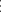

3.6 Limiting probabilities
Mean recurrent time: starting from state \(E_i\), the expected steps chain takes to return to state \(E_i\).
For a recurrent state \(\, f_{ii} = 1\). i.e \(\left \{f^n_{ii} , \, n = 1, 2, \, \cdots \right \}\) forms a probability function. Hence mean recurrent time of a recurrent
state \(E_i\) is defined as
\[\mu = \sum ^{\infty }_{n = 1} n\, f_{ii}^n\]
\(\mu \) can be a finite or infinite.
If \(\mu < \infty \), then state \(E_i\) is called positive recurrent.
If \(\mu = \infty \) , state \(E_i\) is called null recurrent.
In a finite states Markov chain, if a state is recurrent it will always be positive recurrent.
Aperiodic State. Let \[\begin {matrix} P^n_{ii} & > 0, & n = d, \, 2d, \, 3d, \, \cdots \\\\ & = 0, & n \neq d, \, 2d, \, 3d, \, \cdots \end {matrix}\] where \(d\) is a positive integer \(> 1\). Then state \(E_i\) is called periodic and the period is \(d\).
If \(P^n_{ii} > 0\) for \(n = 1, \, 2, \, \cdots \) then state \(E_i\) is called aperiodic. i.e there is positive probability of a transition from \(E_i\) to \(E_i\) at every jump.
Example 3.6.1. Consider a Markov chain with transition matrix \[P = \bordermatrix {~ & E_0 & E_1 & E_2 & E_3 & E_4\cr E_0 & 0 & 0 & 0 & 0 & 1\cr E_1 & 1 & 0 & 0 & 0 & 0\cr E_2 & \frac {1}{2} & \frac {1}{2} & 0 & 0 & 0\cr E_3 & \frac {1}{3} & \frac {1}{3} & \frac {1}{3} & 0 & 0\cr E_4 & \frac {1}{4} & \frac {1}{4} & \frac {1}{4} & \frac {1}{4} & 0\cr }\]
\(P^{(2)}_{00} = P_{04}\, P_{4,0} \, > 0\)
\(P^{(3)}_{00} = P_{04}\, P_{41}\,P_{10} \, > 0\)
\(P^{(4)}_{00} = P_{04}\, P_{43}\, P_{32}\, P_{20}\, > 0\)
\(E_3\) is aperiodic.
A positive recurrent and aperiodic state is called ergodic state.
Limiting (stationary or equilibrium) distribution
Let \(P = \begin {pmatrix} .4 & .1 & .5\\ .2 & .2 & .6\\ .3 & .4 & .3\\ \end {pmatrix}\hspace {0.3cm}\) and \(P_{(0)} = \begin {pmatrix} .3 & .4 & .3\\ \end {pmatrix}\). All the three states are egordic
| \(n\) | \(P^{(n)}\) | \(P_{(n)}\) | ||
| 1 | \(\begin {pmatrix} .4 & .1 & .5\\ .2 & .2 & .6\\ .3 & .4 & .3\\ \end {pmatrix}\) | \(\begin {pmatrix} .29 & .23 & .48\\ \end {pmatrix}\) | ||
| 2 | \(\begin {pmatrix} .33 & .26 & .41\\ .3 & .3 & .4\\ .29 & .23 & .48\\ \end {pmatrix}\) | \(\begin {pmatrix} .306 & .267 & .427\\ \end {pmatrix}\) | ||
|  | ||||
| 4 | \(\begin {pmatrix} .3058 & .2581 & .4361\\ .3050 & .2600 & .4350\\ .3039 & .2548 & .4413\\ \end {pmatrix}\) | \(\begin {pmatrix} .30481 & .25787 & .4322\\ \end {pmatrix}\) | ||
| 6 | \(\begin {pmatrix} .3648 & .2572 & .4379\\ .3048 & .2573 & .4378\\ .30 & .2569 & .4383\\ \end {pmatrix}\) | \(\begin {pmatrix} .30477 & .25720 & .43302\\ \end {pmatrix}\) |
We note that for large values of \(n\), the rows of \(P^{(n)}\) are equal and the unconditional distribution \(P_{(n)}\) also
does not change.
Limiting distribution. Sequence of unconditional distribution \(P_{(0)}, \, P_{(1)}, \, \cdots \) converges to some distribution \(\pi \) of
- (i)
- \(\lim _{n\rightarrow \infty } P^n_{ij}\hspace {0.3cm}\) exist
- (ii)
- \(\lim _{n\rightarrow \infty } P^{(n)}_{ij}\hspace {0.2cm}\) is independent of \(i\).
Theorem 3.6.2. For an irreducible ergodic Markov chain, \(\lim _{n\rightarrow \infty } P^n_{ij}\,\) exist and is independent of \(i\).
Let \(\, \lim _{n\rightarrow \infty } P^{(n)}_{ij} = \pi _j\,\, , \hspace {0.3cm} j\geq 0\). Then \(\pi _j\) is the unique solution of equation \[\pi _j = \sum ^{\infty }_{i = 0} \pi _i\, P_{ij}\, , \hspace {0.2cm} j\geq 0\hspace {0.3cm}\text {and}\hspace {0.3cm} \sum ^{\infty }_{j = 0} \pi _j = 1.\]
Example 3.6.3. Consider a Markov chain with states \(\, 0, \, 1, \, 2, \, 3, \, 4.\)
Suppose \(P_{04} = 1\), and suppose that when the chain is in state \(i, \, i>0\), the next state s equally likely to be
any of the states \(0,\, 1, \, \cdots \, , \, i - 1\). Find the limiting probabilities of this Markov chain
\[P = \bordermatrix {~ & E_0 & E_1 & E_2 & E_3 & E_4\cr E_0 & 0 & 0 & 0 & 0 & 1\cr E_1 & 1 & 0 & 0 & 0 & 0\cr E_2 & \frac {1}{2} & \frac {1}{2} & 0 & 0 & 0\cr E_3 & \frac {1}{3} & \frac {1}{3} & \frac {1}{3} & 0 & 0\cr E_4 & \frac {1}{4} & \frac {1}{4} & \frac {1}{4} & \frac {1}{4} & 0\cr }\]
Solution. Let \(\pi = \begin {pmatrix} \pi _0, & \pi _1, & \pi _2, & \pi _3, & \pi _4\\ \end {pmatrix}\,\) be the limiting distribution \[\pi = \pi \, P\]
\[\begin {pmatrix} \pi _0, & \pi _1, & \pi _2, & \pi _3, & \pi _4\\ \end {pmatrix} = \begin {pmatrix} \pi _0 & \pi _1 & \pi _2 & \pi _3 & \pi _4\\ \end {pmatrix}\times \begin {pmatrix} 0 & 0 & 0 & 0 & 1\\ 1 & 0 & 0 & 0 & 0\\ \frac {1}{2} & \frac {1}{2} & 0 & 0 & 0\\ \frac {1}{3} & \frac {1}{3} & \frac {1}{3} & 0 & 0\\ \frac {1}{4} & \frac {1}{4} & \frac {1}{4} & \frac {1}{4} & 0\\ \end {pmatrix}\]
\begin {align*} \pi _0 & = \pi _1 + \frac {1}{2}\, \pi _2 + \frac {1}{3}\, \pi _3 + \frac {1}{4}\, \pi _4\\ \pi _1 & = \frac {1}{2}\, \pi _2 + \frac {1}{3}\, \pi _3 + \frac {1}{4}\, \pi _4\\ \pi _2 & = \frac {1}{3}\, \pi _3 + \frac {1}{4}\, \pi _4\\ \pi _3 & = \frac {1}{4}\, \pi _4\\ \pi _4 & = \pi _0 \end {align*}
Also \(\hspace {0.3cm} \pi _0 + \pi _1 + \pi _2 + \pi _3 + \pi _4 = 1\) \begin {align*} \pi _4 & = \pi _0\\ \pi _3 & = \frac {1}{4}\,\cdot \pi _0\\ \pi _2 & = \frac {1}{3}\left (\frac {1}{4}\,\pi _0\right ) + \frac {1}{4}\, \pi _0 = \frac {4}{12}\, \pi _0 = \frac {1}{3}\,\cdot \, \pi _0\\ \pi _1 & = \frac {1}{2}\left (\frac {1}{3}\pi _0\right ) + \frac {1}{3}\left (\frac {1}{4}\pi _0\right ) + \frac {1}{4}\pi _0 = \frac {1}{2}\, \cdot \, \pi _0 \end {align*}
\[\pi _0 = \pi _0\left (\frac {1}{2} + \frac {1}{2}\cdot \frac {1}{3} + \frac {1}{3}\cdot \frac {1}{4} + \frac {1}{4}\right ) = \pi _0\left (\frac {6 + 2 + 1 + 3}{12}\right )\]
Since \(\hspace {0.3cm} \pi _0 + \pi _1 + \pi _2 + \pi _3 + \pi _4 = 1\). Hence \[\pi _0 + \frac {1}{2}\pi _0 + \frac {1}{3}\pi _0 + \frac {1}{4}\pi _0 + \pi _0 = 1\]
\[\left (1 + \frac {1}{2} + \frac {1}{3} + \frac {1}{4} + 1\right ) = 1\]
\[\pi _0 = \frac {12}{37}.\]
Hence the limiting distribution is
\[\pi = \begin {pmatrix} \frac {12}{37}, & \frac {1}{2}\times \frac {12}{37}, & \frac {1}{3}\times \frac {12}{37}, & \frac {1}{4}\times \frac {12}{37}, & \frac {12}{37}\\ \end {pmatrix}\]
Interpretation: After a long time, the chain will visit \(E_0\) with probability \(\frac {12}{37}\) and so on.
(This distribution becomes independent of the initial distribution).
Or
In the long run, the chain will be in state \(E_0\) at \(\frac {12}{37}\times 100\%\). □
Questions on this section
Stuck on something here? Ask below and it stays attached to this topic.